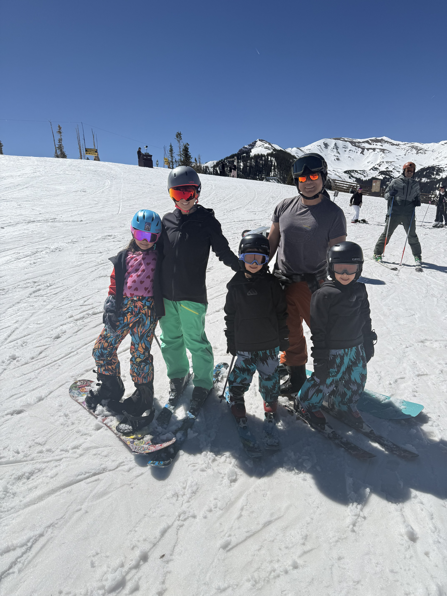

Capstone Day 1
Reflection
My time student teaching has given me the opportunity to get into a US high school setting in a full-time capacity and continue to develop my strategies for engaging and educating high school students.
I am proud of my ability to craft well-planned lessons that are designed to take the student from curious observer to skilled applicator of theories, concepts and ideas. My lesson planning utilizes my solid understanding of economics and business concepts to carefully consider the most effective approach to introducing and explaining the idea or concept of the day. This is then followed up by a scaffolded practice where the idea is applied as a group or with much support, and finally students are given the opportunity to use the idea in a freer setting. I feel lessons that are organized in this way are engaging, informative, and give students the opportunity to learn in a range of settings. I strongly believe in the benefits of having well planned lessons and stand behind my approach to lesson planning and the results of that approach.
I am proud of having classes that are engaging and developing meaningful relationships with students. I like my students as people and enjoy getting to know them and watch them grow. My students think I am enthusiastic, knowledgeable of the subjects I teach on, and weird, and I am proud of all of it.
It is always a challenge to try and motivate students who have a mindset that this class was an elective and therefore supposed to be their “easy” class. In my mind, it was their easy class as well, as the class as structured to have virtually no homework, and minimal required studying for assessments, which tested for basic knowledge on fundamental concepts and themes from the course. But for some, the requirements of maintaining focus, participating, contributing, and thinking critically for 90 minutes proved beyond what they were willing to put out. Efforts to make lessons even more engaging or relevant or scaffolded were met by some with a similar level of ferocious apathy. In a Hollywood teacher flick in the vein of Lean on Me or Dangerous Minds, I would have eventually tapped into the way to connect to that group, to find common ground, and to bask in the glow of education’s awesomeness. Sadly, for a few students, this was not the case, and I left the class unsure if they had taken anything away from my time with them. I think that all I can do is continue to try and probe and seek out opportunities to figure out how to motivate those who don’t want to be. But it is challenging none the less.
It is challenging figuring out how to balance a classroom of students with a chasm of difference in their prior knowledge enrolled in a tough course such as AP Macro. Balancing the pace required to meet the rigors and breadth of the AP curriculum with trying to ensure the greatest number of students are mastering the greatest number of topics is Sisyphean. The pendulum is bound to swing one way too far or the other, and it seems like you will miss both marks. But, as with everything with teaching, you do your best, and usually, eventually, hopefully . . . it will be enough.
I have grown in my ability to establish more concrete, established expectations in the classroom, as necessitated by one rowdy class that refused to adhere to the most basic tenets of classroom decorum. I am less afraid to be firm and avoid letting things slide because it is the path of least resistance.
I have grown in my ability to collaborate with other teachers through my student-teacher relationships developed at my time at Niwot. I have always been a bit of a lone wolf when it comes to teaching by the nature of the positions that I have held, but it has been quite nice to have a second pair of eyes and ears to bounce ideas off and to receive feedback from.
Continuing from my growth as a setter of expectations – if I could do it again, I would have set more clear-cut, consistent expectations from the outset for all my classes. It really was only necessary for one, but it is because of that one that I now see the need to do it for all classes. Expectations set from the outset in a clear, fair, mutually agreed upon way ensure the students remain accountable throughout the entire semester.
I taught Business and Economics this semester, both of which I am comfortable with, though Economics is my main field of expertise. Perhaps given the opportunity, I would have fully taught in a Social Studies or Mathematics setting, as these are positions that I am currently also seeking but have less experience teaching in. I am not sure what the best choice is/was in terms of subject, given my broad range of subjects that I could teach – time will tell with this one.
As a full time teacher, I am both looking forward to and setting for myself as a goal becoming more integrated into the school community. Contributing to school planning and being a part of a collaborative team are important to me and were difficult to achieve as a student teacher that was straddling two departments. I am also hoping to be more involved in parent communications. Until now, the bulk of my interactions with parents have revolved around parent teacher conferences, which are infrequent and never long enough to hit all the nuanced issues of their child’s education. I have not had access to IC in the past and am hoping to utilize it more effectively to enhance both parent and student communication to keep everyone on track and on the same page.
I continue to believe that well-planned, engaging, enthusiastically-led lessons is the recipe to successful teaching and learning experiences. However I also now believe that this in and of itself is not always sufficient to ensure a self-regulated, well-functioning classroom. Expectations need to be laid out ahead of time as a back up plan.
I continue to believe that it is possible and important to try to understand each student and their individual conditions in measuring their progress and learning. I now believe that is easier to do this than ever, given the technology we have to track and communicate individual progress.
Looking back on this year, I feel more grounded in what I do well and more aware of where I still need to grow. I have built a strong foundation in planning engaging, structured lessons and forming meaningful relationships with students, while also recognizing the importance of consistency, clear expectations, and adaptability in managing a classroom effectively. There are certainly things I would do differently, and students I wish I had reached more fully, but that is part of the reality of teaching. I am moving forward with a more realistic understanding of the profession, a clearer sense of my goals, and the mindset that growth in teaching is ongoing and never really finished.
I am proud of my ability to craft well-planned lessons that are designed to take the student from curious observer to skilled applicator of theories, concepts and ideas. My lesson planning utilizes my solid understanding of economics and business concepts to carefully consider the most effective approach to introducing and explaining the idea or concept of the day. This is then followed up by a scaffolded practice where the idea is applied as a group or with much support, and finally students are given the opportunity to use the idea in a freer setting. I feel lessons that are organized in this way are engaging, informative, and give students the opportunity to learn in a range of settings. I strongly believe in the benefits of having well planned lessons and stand behind my approach to lesson planning and the results of that approach.
I am proud of having classes that are engaging and developing meaningful relationships with students. I like my students as people and enjoy getting to know them and watch them grow. My students think I am enthusiastic, knowledgeable of the subjects I teach on, and weird, and I am proud of all of it.
It is always a challenge to try and motivate students who have a mindset that this class was an elective and therefore supposed to be their “easy” class. In my mind, it was their easy class as well, as the class as structured to have virtually no homework, and minimal required studying for assessments, which tested for basic knowledge on fundamental concepts and themes from the course. But for some, the requirements of maintaining focus, participating, contributing, and thinking critically for 90 minutes proved beyond what they were willing to put out. Efforts to make lessons even more engaging or relevant or scaffolded were met by some with a similar level of ferocious apathy. In a Hollywood teacher flick in the vein of Lean on Me or Dangerous Minds, I would have eventually tapped into the way to connect to that group, to find common ground, and to bask in the glow of education’s awesomeness. Sadly, for a few students, this was not the case, and I left the class unsure if they had taken anything away from my time with them. I think that all I can do is continue to try and probe and seek out opportunities to figure out how to motivate those who don’t want to be. But it is challenging none the less.
It is challenging figuring out how to balance a classroom of students with a chasm of difference in their prior knowledge enrolled in a tough course such as AP Macro. Balancing the pace required to meet the rigors and breadth of the AP curriculum with trying to ensure the greatest number of students are mastering the greatest number of topics is Sisyphean. The pendulum is bound to swing one way too far or the other, and it seems like you will miss both marks. But, as with everything with teaching, you do your best, and usually, eventually, hopefully . . . it will be enough.
I have grown in my ability to establish more concrete, established expectations in the classroom, as necessitated by one rowdy class that refused to adhere to the most basic tenets of classroom decorum. I am less afraid to be firm and avoid letting things slide because it is the path of least resistance.
I have grown in my ability to collaborate with other teachers through my student-teacher relationships developed at my time at Niwot. I have always been a bit of a lone wolf when it comes to teaching by the nature of the positions that I have held, but it has been quite nice to have a second pair of eyes and ears to bounce ideas off and to receive feedback from.
Continuing from my growth as a setter of expectations – if I could do it again, I would have set more clear-cut, consistent expectations from the outset for all my classes. It really was only necessary for one, but it is because of that one that I now see the need to do it for all classes. Expectations set from the outset in a clear, fair, mutually agreed upon way ensure the students remain accountable throughout the entire semester.
I taught Business and Economics this semester, both of which I am comfortable with, though Economics is my main field of expertise. Perhaps given the opportunity, I would have fully taught in a Social Studies or Mathematics setting, as these are positions that I am currently also seeking but have less experience teaching in. I am not sure what the best choice is/was in terms of subject, given my broad range of subjects that I could teach – time will tell with this one.
As a full time teacher, I am both looking forward to and setting for myself as a goal becoming more integrated into the school community. Contributing to school planning and being a part of a collaborative team are important to me and were difficult to achieve as a student teacher that was straddling two departments. I am also hoping to be more involved in parent communications. Until now, the bulk of my interactions with parents have revolved around parent teacher conferences, which are infrequent and never long enough to hit all the nuanced issues of their child’s education. I have not had access to IC in the past and am hoping to utilize it more effectively to enhance both parent and student communication to keep everyone on track and on the same page.
I continue to believe that well-planned, engaging, enthusiastically-led lessons is the recipe to successful teaching and learning experiences. However I also now believe that this in and of itself is not always sufficient to ensure a self-regulated, well-functioning classroom. Expectations need to be laid out ahead of time as a back up plan.
I continue to believe that it is possible and important to try to understand each student and their individual conditions in measuring their progress and learning. I now believe that is easier to do this than ever, given the technology we have to track and communicate individual progress.
Looking back on this year, I feel more grounded in what I do well and more aware of where I still need to grow. I have built a strong foundation in planning engaging, structured lessons and forming meaningful relationships with students, while also recognizing the importance of consistency, clear expectations, and adaptability in managing a classroom effectively. There are certainly things I would do differently, and students I wish I had reached more fully, but that is part of the reality of teaching. I am moving forward with a more realistic understanding of the profession, a clearer sense of my goals, and the mindset that growth in teaching is ongoing and never really finished.
I used to . . . But now I . . .
I used to be unsure if my subject knowledge was sufficient to teach the subjects I want to teach.
But now I am confident in having the background information needed to be a successful teacher.
But now I am confident in having the background information needed to be a successful teacher.
I used to worry about connecting with younger high school students, especially as I get older.
But now I am happy to see how the dynamic is different, but not worse.
But now I am happy to see how the dynamic is different, but not worse.
I used to view my previous professional background as separate from my teaching.
But now I see how my real-world experience adds essential depth and credibility to my business and economics lessons.
But now I see how my real-world experience adds essential depth and credibility to my business and economics lessons.
I used to be reliant solely on engaging lessons as a means of classroom management.
But now I have developed an entire toolbox of classroom management strategies.
But now I have developed an entire toolbox of classroom management strategies.
I used to collect data regularly but would do little with it to inform me of my teaching practices
But now I am making an effort to more regularly use data to drive future planning and decisions.
But now I am making an effort to more regularly use data to drive future planning and decisions.
I used to focus primarily on the delivery of complex economic concepts.
But now I am more adept at scaffolding those topics to ensure all students can access the curriculum regardless of their starting point.
But now I am more adept at scaffolding those topics to ensure all students can access the curriculum regardless of their starting point.
I used to be ready to dive into the lesson right away.
But now I am more attuned to the importance of checking in with students first to gauge everyone’s readiness for the day.
But now I am more attuned to the importance of checking in with students first to gauge everyone’s readiness for the day.
I used to be happy to let students finish work without any sort of exit procedure.
But now I am more inclined to implement the use of exit tickets or other quick assessments as a means to judge achievement of learning goals for the day.
But now I am more inclined to implement the use of exit tickets or other quick assessments as a means to judge achievement of learning goals for the day.
I used to prioritize completing the planned curriculum for the day.
But now I am more flexible in adjusting the pace of a lesson based on real-time student feedback and comprehension.
But now I am more flexible in adjusting the pace of a lesson based on real-time student feedback and comprehension.
I used to be wary of collaborating with other teachers as I worried it would either be extra burden or result in me implementing teaching approaches that don’t fit my style.
But now I am more open to the possibility of the positives of collaborating far outweighing the drawbacks.
But now I am more open to the possibility of the positives of collaborating far outweighing the drawbacks.
I used to be willing to let small infractions slide in the classroom.
But now I am aware of the importance of setting standards and applying them uniformly.
But now I am aware of the importance of setting standards and applying them uniformly.
I used to be be worried that I wouldn’t fit into a traditional American high school.
But now I am aware that there isn’t a one size fits all to any one school, much less all the schools that I am currently focusing on.
But now I am aware that there isn’t a one size fits all to any one school, much less all the schools that I am currently focusing on.
What Fuels Me
Creativity
.png)
Family

Nature